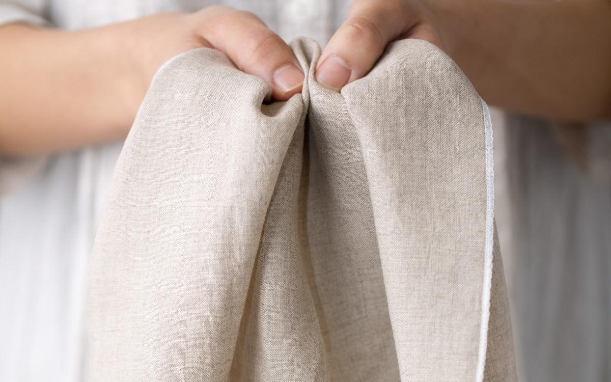

А где во всём этом ты?
Усталость накапливается постепенно. Мы продолжаем работать, заботиться о близких, отвечать на сообщения, принимать решения. Даже в свободное время не всегда получается отдохнуть: внутри звучит «надо». Иногда мы настолько привыкаем быть нужными, что перестаём замечать собственные потребности. Отдых — не награда, которую необходимо заслужить. Этот маршрут — не о том, как делать ещё больше, а о том, как возвращать внимание к себе. Длительное истощение может требовать профессиональной оценки и помощи.
Материалы и практики

Ткань, которая держит
Возьми мягкую ткань и небольшой гладкий предмет. Исследуй фактуру ткани, сложи её в несколько слоёв, затем расправь. Помести предмет в центр и поддерживай его тканью, меняя натяжение. При каком усилии предмет остаётся устойчивым?

Моё пространство
Мягко приблизь руки к себе, а затем отведи их на комфортное расстояние. Перенеси движения на большой лист бумаги углём или пастелью. Обозначь своё пространство линией. Что хочется приблизить, а чему необходимо дать больше расстояния?

Предмет, который напоминает
Создай из небольшого кусочка глины предмет, который удобно держать в ладони. Подумай об одном доступном действии заботы о себе. Оставь на предмете знак, связанный с этим действием.
Интерактивная заметка
Здесь можно записать свои мысли. Нажми «Скачать заметку», чтобы сохранить её только на своём устройстве. Записи не отправляются на сайт.
Индивидуальная поддержка
На индивидуальной встрече можно исследовать переживания в собственном темпе, без необходимости приходить с готовыми ответами. Поддержка строится вокруг твоей ситуации и потребностей.
Познакомиться со специалистами →Группы и встречи
«Место для себя» — концепция поддерживающей арт-терапевтической группы. Через творчество, работу с материалами и разговор участники могут исследовать свой опыт. Даты и условия участия пока не определены.
Подробнее о группах →В завершение
Тебе не нужно заслуживать право остановиться. Отдых — не награда за всё сделанное. Это часть жизни.